Tire Pressure Sensor: Service and Repair
Removal
Tire Removal
1. Deflate tire & remove balance weights.
NOTE:
Sensor can be unscrewed before unseating the tire bead.
CAUTION:
- The tire bead should be broken approx. 90° from the valve side of the wheel. The bead breaker should not be set too deep.
- Avoid tire/tool contact with the valve on dismount.
- Dismount should end near the valve.
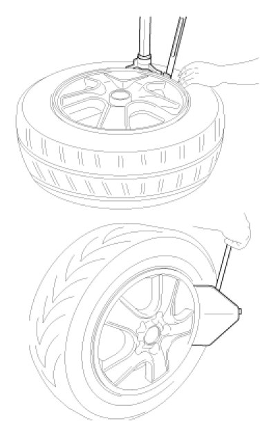
Sensor Removal
CAUTION:
Handle the sensor with care.
1. Remove the valve nut.
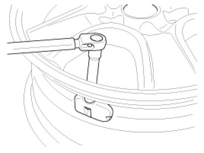
CAUTION:
The valve nut should not be re-used.
2. Discard the valve assembly.
Installation
Sensor Fit
CAUTION:
- Handle the sensor with care.
- Avoid lubricant contact.
- Ensure that the wheel to be fitted is designed for sensor mount. There should normally be a mark to indicate this.
- Ensure that the valve hole and mating face of the wheel are clean.
1. Slide the sensor-valve unit through the valve hole of the rim. Hold the sensor against the rim and the rubber grommet against the sealing surface.
2. Insert the nut over the valve stem and then tighten the nut.
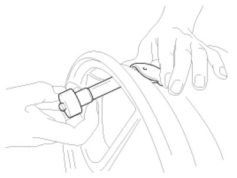
3. Continue to tightening the nut until contact with the rim and then tighten to 3.5 - 4.5Nm.
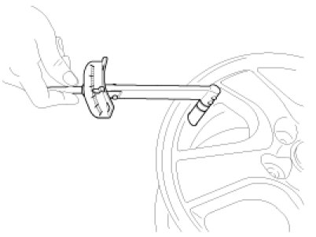
CAUTION:
- Tighten slowly with quarter turn steps until the final torque is reached.
- Do not exceed allowed torque.
- Do not use electric or pneumatic tools.
4. Check that the sensor is firmly attached to the rim.
CAUTION:
Risk of damage during the tire installation/ removal if the sensor is not firmly attached to the rim.
5. Carry out inflation / pressure correction and then fit valve cap.
CAUTION:
Change the newly installed sensor mode to Normal Fixed Base(Low Line) with the 'GDS'.
Mode (Status / option) of the sensor installed to the vehicle should be Normal Fixed Base (Low).
Sensor ID Writing (Wireless)
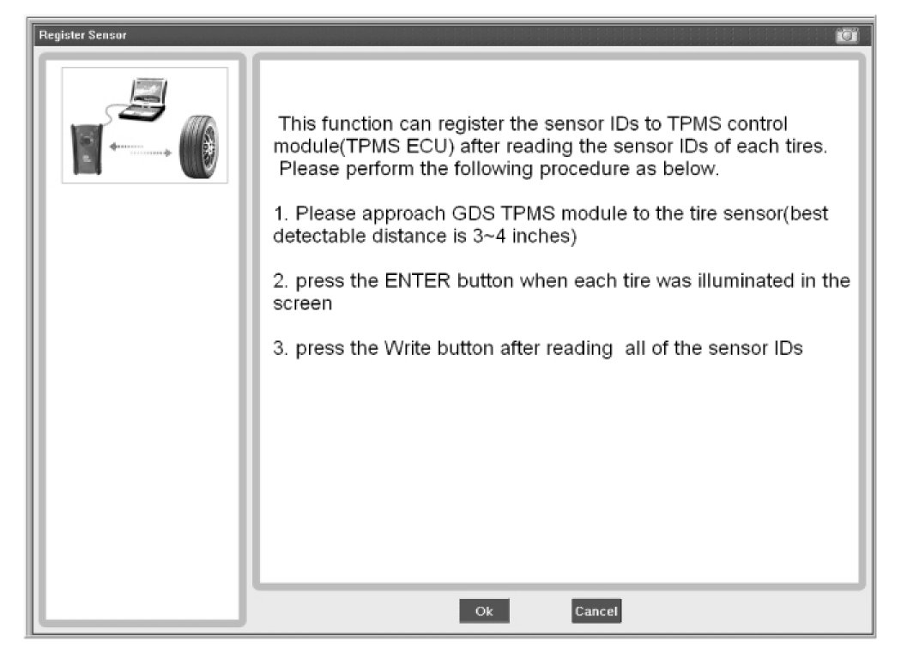
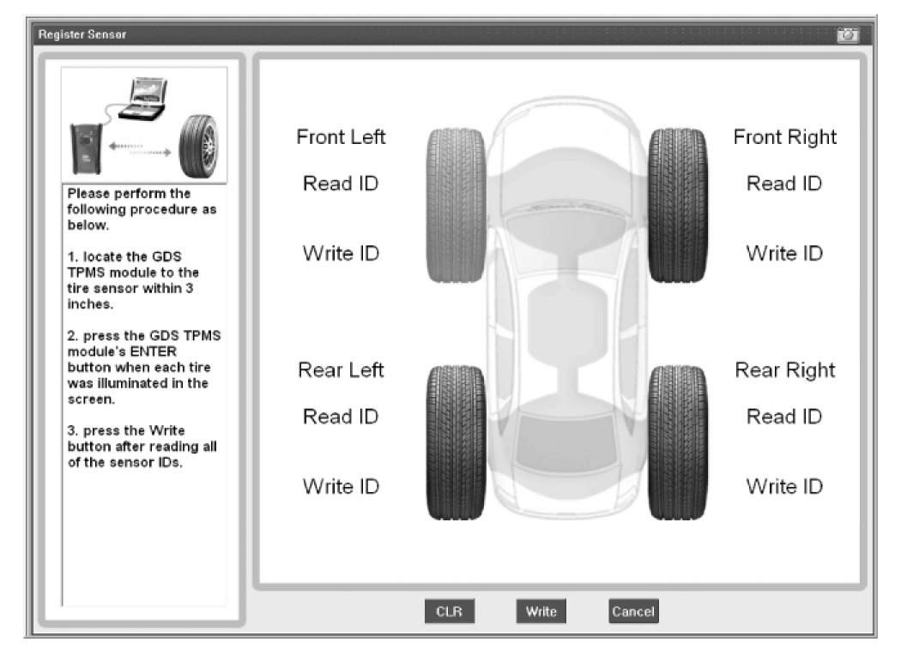
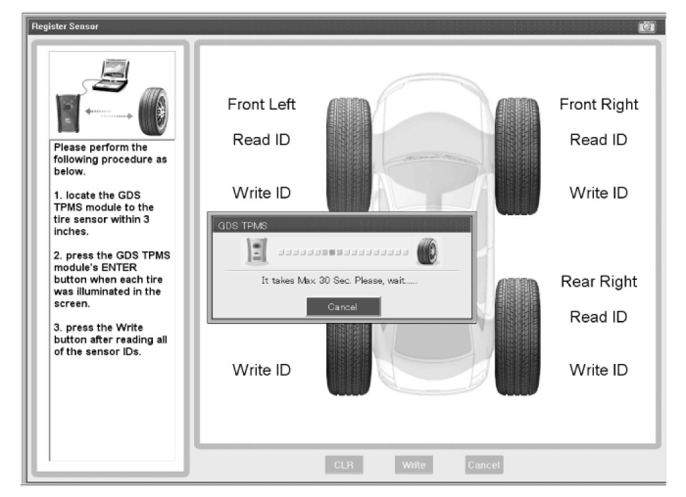
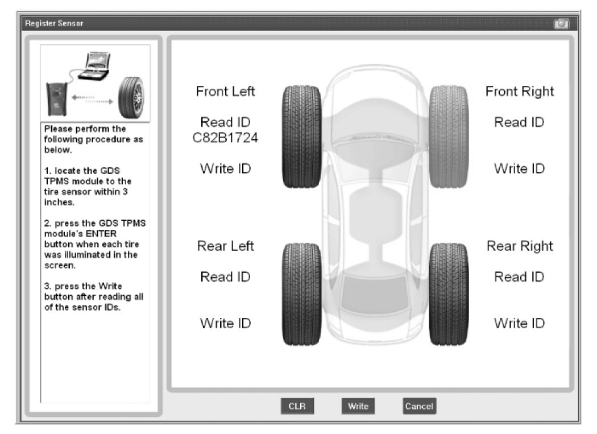
Sensor ID Writing
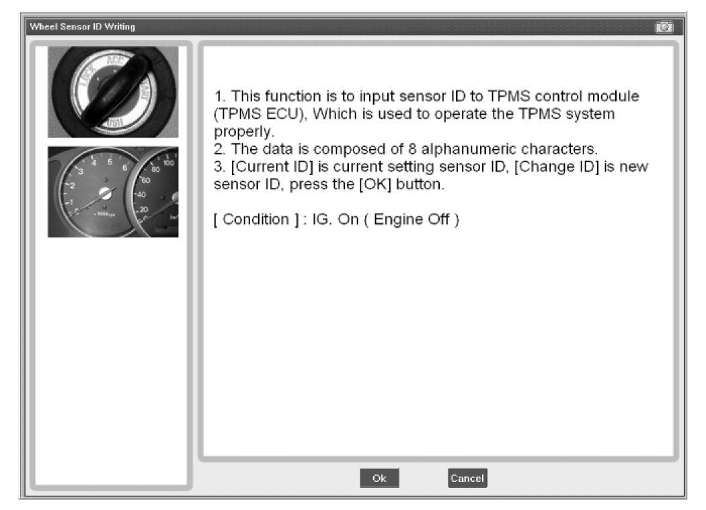
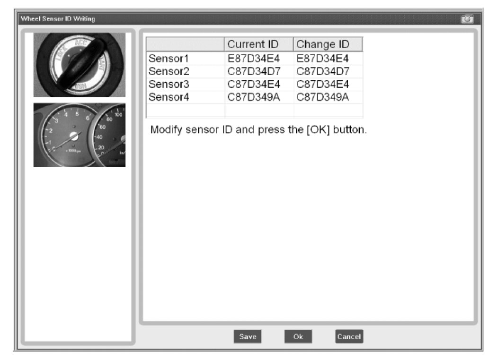
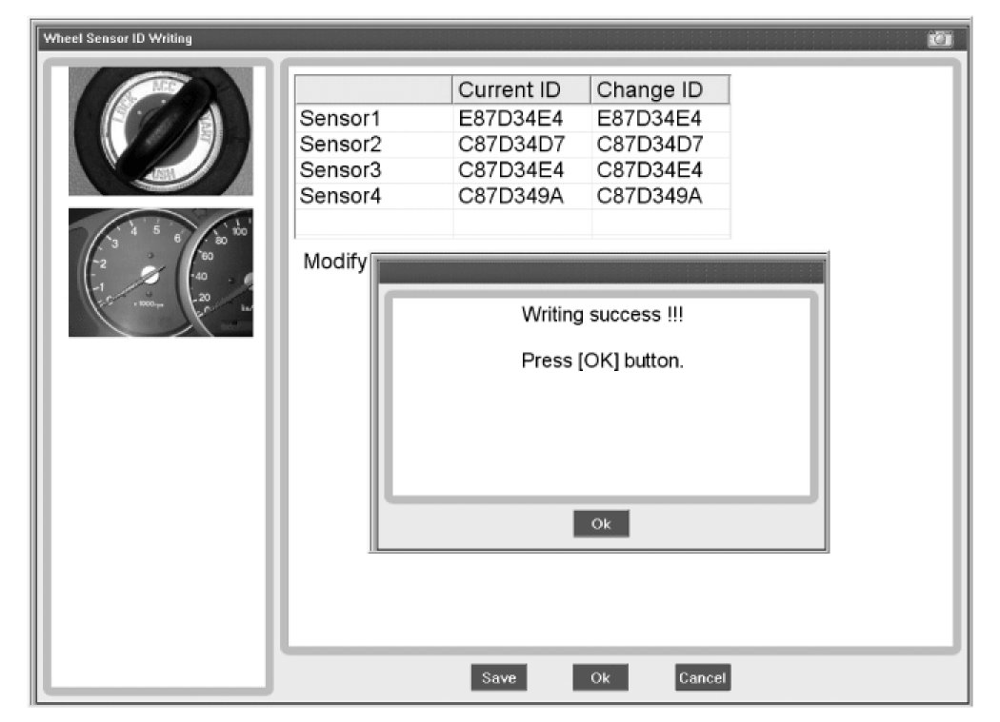